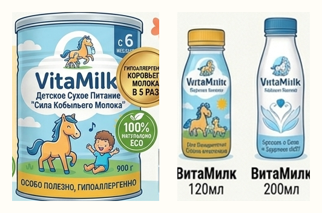
Вариант А · иллюстрированный
Банка 900 г «Сила кобыльего молока», напитки 120 и 200 мл. Мультяшная лошадь с жеребёнком, солнце, природа.
Концепция развития и монетизации конного хозяйства
Как превратить ресурсы фермы в выручку: бренд продуктов из кобыльего молока, агротуризм и конный клуб
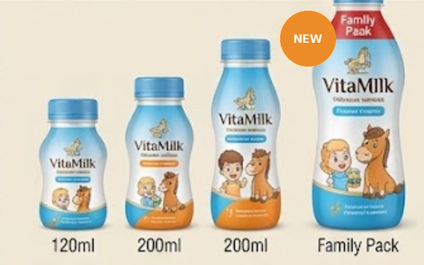
Kids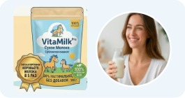
VitaMilk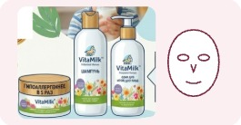
Cosmetics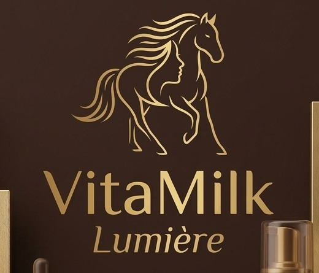
Lumière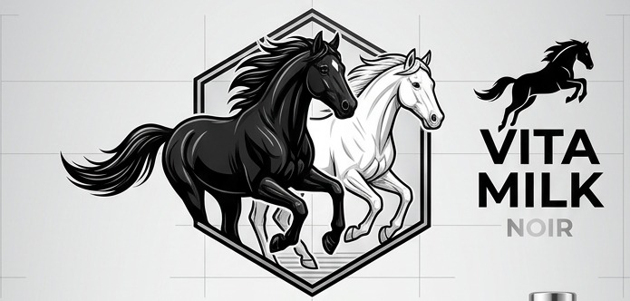
NOIR · for MenКонцепция развития
Ферма — это не только лошади. Каждый ресурс хозяйства должен стать источником дохода.
Бренд ВитаМилк: сухое молоко в пауче, детское питание, косметика, премиальные линейки Lumière и NOIR
2Eco-Farm & Resort: клубное шале, мини-отель в домиках, фирменный магазин продукции
3Постой лошадей, конный клуб, продажа навоза — доход от того, что ферма уже имеет
01 · Идея бренда
Кобылье молоко — природный продукт, который веками давали детям и ослабленным. ВитаМилк превращает его в понятную семью продуктов: от детской смеси до премиального ухода.
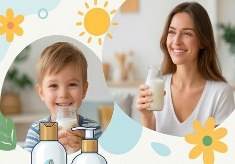
Вектор: доверие мам к продукту для детей — основа для всех будущих линеек
02 · Архитектура
Дети 6 мес – 12 лет. Питание
Игривый · масс-маркетМамы и вся семья. Питание
Тёплый · средний+Мамы и женщины 25+. Уход
Нежный · средний+Женщины 40+. Уход
Элегантный · премиумМужчины 30+. Уход
Сильный · премиумПравило: знак ВитаМилк есть на каждом SKU. В Kids, VitaMilk и Cosmetics он главный; в Lumière и NOIR — подпись-эндорсмент над названием линейки.
03 · Позиционирование
Массовые линейки дают объём и узнаваемость. Премиальные — маржу и статус бренда. Каждая занимает свой угол и не конкурирует с соседней.
Вектор: массовые линейки дают объём сбыта молока, премиальные — максимальную ценность с каждого литра
Линейка 1 · Питание
Дети от 6 месяцев до 12 лет · иммунитет, рост, мягкое пищеварение

Банка 900 г «Сила кобыльего молока», напитки 120 и 200 мл. Мультяшная лошадь с жеребёнком, солнце, природа.
120 мл, 200 мл и Family Pack. Голубой колпачок, ребёнок и жеребёнок на этикетке, цветная полоса по вкусу.
Вектор: детское питание — самый доверительный канал и стабильный спрос на молоко
Линейка 2 · Питание
Мамы и вся семья. Восстановление, энергия, мягкое пищеварение. Питание с пользой природы — для той, кто заботится обо всех.
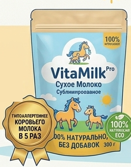
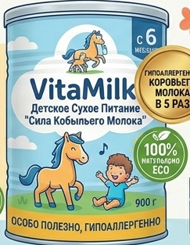
Вектор: сухое молоко в пауче — самый быстрый способ продать излишки молока уже сейчас
Линейка 3 · Уход
Мамы и женщины 25+. Нежный уход с кобыльим молоком для волос, тела и лица. Одна концепция для всей массовой косметики.
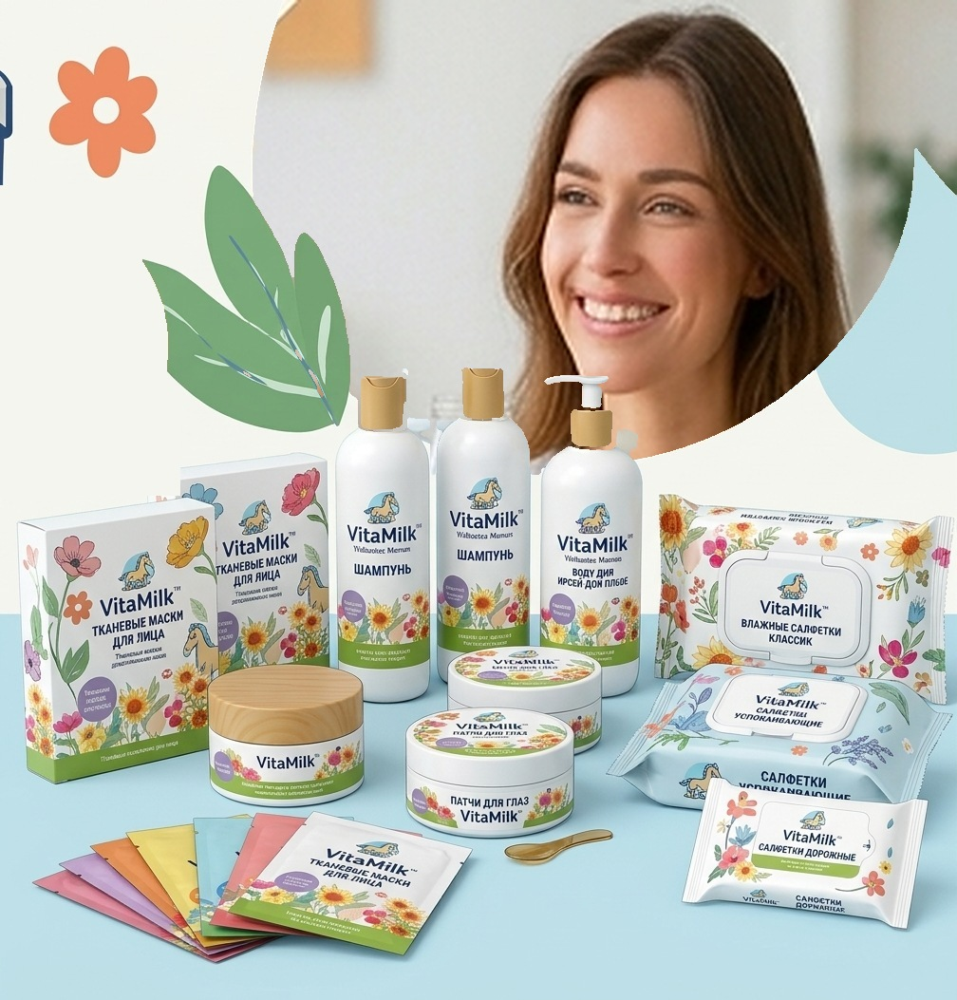
Вектор: косметика продаёт молоко с высокой добавленной стоимостью и не зависит от сроков годности питания
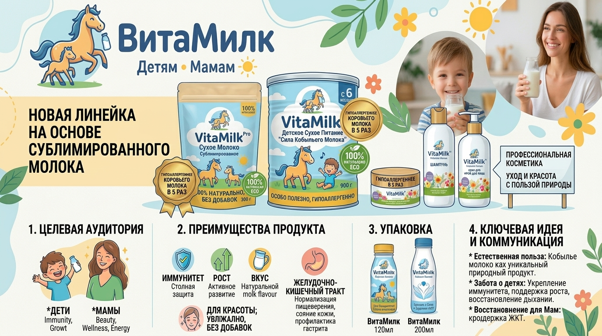
Линейка 4 · Премиум 40+
Сила, которой доверяют мамы, — теперь для вас
Премиальный уход для женщин 40+. Знак — линейный силуэт лошади, грива которой становится волосами женщины.
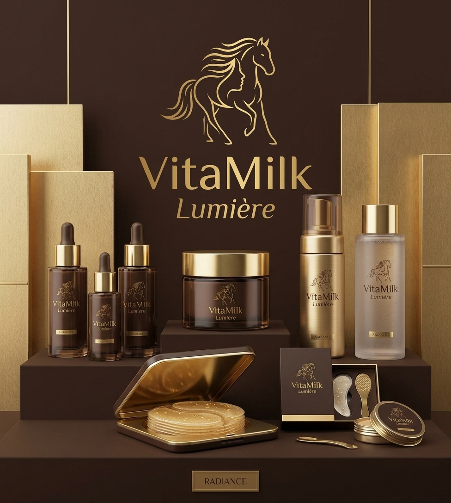
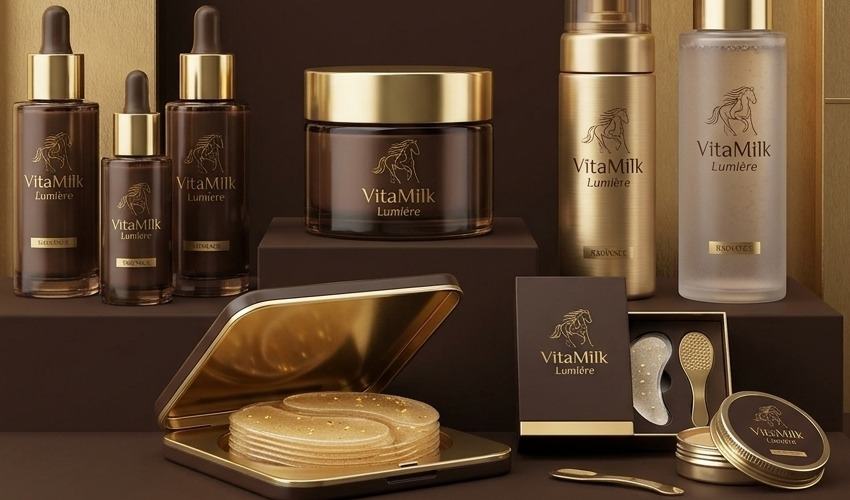
Вектор: премиум для женщин 40+ — максимальная ценность кобыльего молока
Линейка 5 · Для мужчин
Premium men’s grooming
Две лошади — чёрная и белая — в одном рывке: сила и чистота. Мужчины 30+, профессионалы, которые ценят премиальный уход и результат.
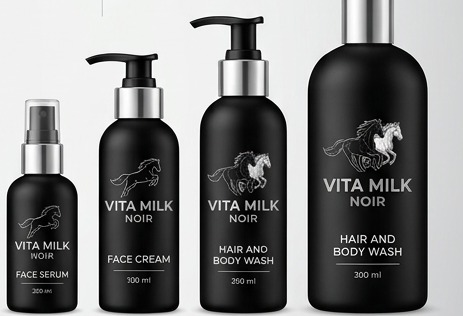
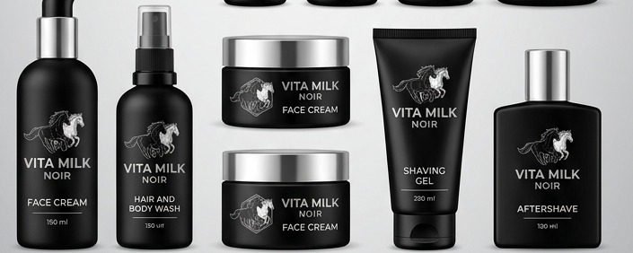
Сыворотка, крем для лица, гель 2-в-1, гель для бритья, лосьон после бритья
Гипоаллергенно, против усталости кожи, восстановление, увлажнение на весь день
Вектор: мужская линейка открывает бренду вторую половину аудитории
Вектор 2 · Агротуризм
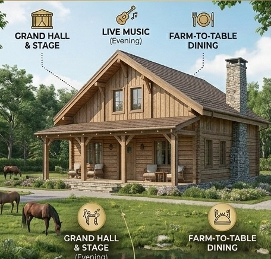
Главный зал и сцена, живая музыка, фермерская кухня, бар
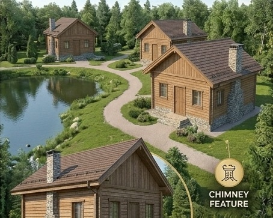
Отдельные шале круглый год, приватность, виды на пруд и пастбища
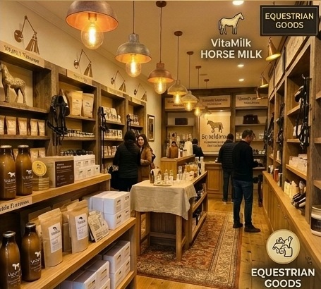
Продукция ВитаМилк и конные товары прямо на ферме
Вектор: гость приезжает к лошадям — и уезжает с продуктами ВитаМилк
Вектор 2 · Агротуризм · Событийный формат
Гриль-фестиваль, фермерская кухня, живая музыка у шале
Конные трюки, родео-номера, показательные выступления
Катание детей на лошадях, знакомство с жеребятами, мастер-классы
Дегустации ВитаМилк, косметика, продукция фермы и партнёров
Как фестиваль продаёт продукт
Вектор: фестивали привлекают людей на ферму и знакомят их с продуктом ВитаМилк
Вектор 2 · Прямые продажи
В одном месте гость видит и покупает всё, что делает ферма:
Вектор: собственная точка продаж — без посредников, с полной наценкой
Вектор 2 · Магазин на ферме · Мерч
Сильные знаки премиальных линеек работают на одежде и аксессуарах. Массовые линейки остаются на упаковке продуктов.
Шоколад и золото, тонкая линия, для неё
Подарок к набору Radiance и сувенир после отдыха на ферме
Чёрный и серебро, две лошади, для него
Конный клуб, ковбойское шоу и корпоративные подарки
Вектор: мерч продаёт культуру общения с лошадью и уносит бренд за пределы фермы
05 · Визуальная система
| Линейка | Палитра | Шрифт | Материал |
|---|---|---|---|
| Kids | Солнечный жёлтый, небесный, синий ВитаМилк | Округлый гротеск | Банка, бутылочка |
| VitaMilk | Зелёный, кремовый, синий ВитаМилк | Округлый гротеск | Пауч, крафт |
| Cosmetics | Пудрово-розовый, белый, цветы | Округлый гротеск | Белый флакон |
| Lumière | Шоколад, матовое золото | Антиква, курсив | Тёмное стекло |
| NOIR | Matte Noir, Charcoal, Platinum, White | Узкий гротеск, капс | Матовый чёрный |
Вектор: единые правила оформления — каждый новый продукт запускается быстрее и дешевле
Итоговая картина
Сухое молоко в пауче и банке для всей семьи
Детское питание и молочные напитки
Уход, маски, патчи, влажные салфетки
Премиум: уход Radiance, мужской уход
Шале, домики, магазин на ферме, конный клуб, постой лошадей
Вектор: каждый ресурс фермы становится отдельным источником дохода
Главные выводы на сегодня
Излишки кобыльего молока уже есть, а сбыта нет — каждый канал превращает их в выручку.
Один бренд ВитаМилк связывает все направления и снижает стоимость запуска каждого следующего.
Чем больше каналов, тем меньше зависимость фермы от одного источника дохода.
Главная мысль
Мы продаём не только кобылье молоко.